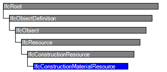

Natural language names
 | Baumaterial - Ressource |
 | Construction Material Resource |
 | Matériaux de construction |
| Baumaterial - Ressource |
| Construction Material Resource |
| Matériaux de construction |
| Item | SPF | XML | Change | Description | IFC2x3 to IFC4 |
|---|---|---|---|---|
| IfcConstructionMaterialResource | ||||
| OwnerHistory | MODIFIED | Instantiation changed to OPTIONAL. | ||
| Identification | X | MODIFIED | Name changed from ResourceIdentifier to Identification. | |
| LongDescription | MODIFIED | Name changed from ResourceGroup to LongDescription. Type changed from IfcLabel to IfcText. | ||
| Usage | X | X | MODIFIED | Name changed from ResourceConsumption to Usage. Type changed from IfcResourceConsumptionEnum to IfcResourceTime. |
| BaseCosts | X | X | MODIFIED | Name changed from BaseQuantity to BaseCosts. Type changed from IfcMeasureWithUnit to IfcAppliedValue. Aggregation changed from NONE to LIST. |
| BaseQuantity | X | X | MODIFIED | Name changed from Suppliers to BaseQuantity. Type changed from IfcActorSelect to IfcPhysicalQuantity. Aggregation changed from SET to NONE. |
| PredefinedType | X | X | MODIFIED | Name changed from UsageRatio to PredefinedType. Type changed from IfcRatioMeasure to IfcConstructionMaterialResourceTypeEnum. |
IfcConstructionMaterialResource identifies a material resource type in a construction project.
HISTORY New entity in IFC2.0.
IFC4 CHANGE The attribute Suppliers has been deleted; use IfcRelAssignsToResource to assign an IfcActor to fulfill the role as a supplier. The attribute UsageRatio has been deleted; use BaseQuantityConsumed and BaseQuantityProduced to indicate material usage.
Occurrences of IfcConstructionMaterialResource are consumed (wholly or partially), or occupied during a construction work task (IfcTask).
Similar to IfcConstructionProductResource, sometimes things such as 5000kg of gravel are already instantiated as an instance of an IfcProduct subtype because it is a result of a work task (for example, ‘transporting gravel’). In this case, the instance of IfcConstructionMaterialResource can be associated with the product instance ‘5000kg of gravel’ to provide more information for resource uses. Nevertheless, IfcConstructionMaterialResource should only be used to represent resource usage, but not product substances.
NOTE This entity is not the same as IfcMaterial. One one hand, IfcConstructionMaterialResource represents usage of bulk materials such as sand, gravels, nails and so on. Physical manifestations can be instantiated from IfcProduct as well, depending on their uses in the system, and such an IfcProduct object can be assigned to the IfcConstructionMaterialResource object via IfcRelAssignsToResource. On the other hand, IfcMaterial is about physical materials that a physical building element consists of, possibly with detailed material layering information."
| # | Attribute | Type | Cardinality | Description | C |
|---|---|---|---|---|---|
| 11 | PredefinedType | IfcConstructionMaterialResourceTypeEnum | [0:1] | Defines types of construction material resources. | X |

| # | Attribute | Type | Cardinality | Description | C |
|---|---|---|---|---|---|
| IfcRoot | |||||
| 1 | GlobalId | IfcGloballyUniqueId | [1:1] | Assignment of a globally unique identifier within the entire software world. | X |
| 2 | OwnerHistory | IfcOwnerHistory | [0:1] |
Assignment of the information about the current ownership of that object, including owning actor, application, local identification and information captured about the recent changes of the object,
NOTE only the last modification in stored - either as addition, deletion or modification. | X |
| 3 | Name | IfcLabel | [0:1] | Optional name for use by the participating software systems or users. For some subtypes of IfcRoot the insertion of the Name attribute may be required. This would be enforced by a where rule. | X |
| 4 | Description | IfcText | [0:1] | Optional description, provided for exchanging informative comments. | X |
| IfcObjectDefinition | |||||
| HasAssignments | IfcRelAssigns @RelatedObjects | S[0:?] | Reference to the relationship objects, that assign (by an association relationship) other subtypes of IfcObject to this object instance. Examples are the association to products, processes, controls, resources or groups. | X | |
| Nests | IfcRelNests @RelatedObjects | S[0:1] | References to the decomposition relationship being a nesting. It determines that this object definition is a part within an ordered whole/part decomposition relationship. An object occurrence or type can only be part of a single decomposition (to allow hierarchical strutures only). | X | |
| IsNestedBy | IfcRelNests @RelatingObject | S[0:?] | References to the decomposition relationship being a nesting. It determines that this object definition is the whole within an ordered whole/part decomposition relationship. An object or object type can be nested by several other objects (occurrences or types). | X | |
| HasContext | IfcRelDeclares @RelatedDefinitions | S[0:1] | References to the context providing context information such as project unit or representation context. It should only be asserted for the uppermost non-spatial object. | X | |
| IsDecomposedBy | IfcRelAggregates @RelatingObject | S[0:?] | References to the decomposition relationship being an aggregation. It determines that this object definition is whole within an unordered whole/part decomposition relationship. An object definitions can be aggregated by several other objects (occurrences or parts). | X | |
| Decomposes | IfcRelAggregates @RelatedObjects | S[0:1] | References to the decomposition relationship being an aggregation. It determines that this object definition is a part within an unordered whole/part decomposition relationship. An object definitions can only be part of a single decomposition (to allow hierarchical strutures only). | X | |
| HasAssociations | IfcRelAssociates @RelatedObjects | S[0:?] | Reference to the relationship objects, that associates external references or other resource definitions to the object.. Examples are the association to library, documentation or classification. | X | |
| IfcObject | |||||
| 5 | ObjectType | IfcLabel | [0:1] |
The type denotes a particular type that indicates the object further. The use has to be established at the level of instantiable subtypes. In particular it holds the user defined type, if the enumeration of the attribute PredefinedType is set to USERDEFINED.
| X |
| IsDeclaredBy | IfcRelDefinesByObject @RelatedObjects | S[0:1] | Link to the relationship object pointing to the declaring object that provides the object definitions for this object occurrence. The declaring object has to be part of an object type decomposition. The associated IfcObject, or its subtypes, contains the specific information (as part of a type, or style, definition), that is common to all reflected instances of the declaring IfcObject, or its subtypes. | X | |
| Declares | IfcRelDefinesByObject @RelatingObject | S[0:?] | Link to the relationship object pointing to the reflected object(s) that receives the object definitions. The reflected object has to be part of an object occurrence decomposition. The associated IfcObject, or its subtypes, provides the specific information (as part of a type, or style, definition), that is common to all reflected instances of the declaring IfcObject, or its subtypes. | X | |
| IsTypedBy | IfcRelDefinesByType @RelatedObjects | S[0:1] | Set of relationships to the object type that provides the type definitions for this object occurrence. The then associated IfcTypeObject, or its subtypes, contains the specific information (or type, or style), that is common to all instances of IfcObject, or its subtypes, referring to the same type. | X | |
| IsDefinedBy | IfcRelDefinesByProperties @RelatedObjects | S[0:?] | Set of relationships to property set definitions attached to this object. Those statically or dynamically defined properties contain alphanumeric information content that further defines the object. | X | |
| IfcResource | |||||
| 6 | Identification | IfcIdentifier | [0:1] | An identifying designation given to a resource. It is the identifier at the occurrence level. | X |
| 7 | LongDescription | IfcText | [0:1] | A detailed description of the resource (e.g. the skillset for a labor resource). | X |
| ResourceOf | IfcRelAssignsToResource @RelatingResource | S[0:?] | Set of relationships to other objects, e.g. products, processes, controls, resources or actors, for which this resource object is a resource. | X | |
| IfcConstructionResource | |||||
| 8 | Usage | IfcResourceTime | [0:1] | Indicates the work, usage, and times scheduled and completed. Some attributes on this object may have associated constraints or time series; see documentation of IfcResourceTime for specific usage. If the resource is nested, then certain values may be calculated based on the component resources as indicated at IfcResourceTime. | X |
| 9 | BaseCosts | IfcAppliedValue | L[1:?] | Indicates the unit costs for which accrued amounts should be calculated. Such unit costs may be split into Name designations (for example, 'Standard', 'Overtime'), and may contain a hierarchy of cost values that apply at different dates (using IfcCostValue.ApplicableDate and IfcCostValue.FixedUntilDate). | X |
| 10 | BaseQuantity | IfcPhysicalQuantity | [0:1] | Identifies the base quantity consumed of the resource relative to assignments. For crew, labour, subcontract, and equipment resources, this refers to IfcQuantityTime. For material resources, this refers to IfcQuantityVolume. For product resources, this refers to IfcQuantityCount. | X |
| IfcConstructionMaterialResource | |||||
| 11 | PredefinedType | IfcConstructionMaterialResourceTypeEnum | [0:1] | Defines types of construction material resources. | X |
Object Typing
The Object Typing concept applies to this entity as shown in Table 292.
| |||
Table 292 — IfcConstructionMaterialResource Object Typing |
Quantity Sets
The Quantity Sets concept applies to this entity as shown in Table 293.
| ||
Table 293 — IfcConstructionMaterialResource Quantity Sets |
Resource Type Assignment
The Resource Type Assignment concept applies to this entity as shown in Table 294.
| ||||
Table 294 — IfcConstructionMaterialResource Resource Type Assignment |
Resource Cost
The Resource Cost concept applies to this entity as shown in Table 295.
| ||||||||
Table 295 — IfcConstructionMaterialResource Resource Cost |
Resource Quantity
The Resource Quantity concept applies to this entity as shown in Table 296.
| ||||||
Table 296 — IfcConstructionMaterialResource Resource Quantity |
| # | Concept | Model View |
|---|---|---|
| IfcRoot | ||
| Software Identity | Common Use Definitions | |
| Revision Control | Common Use Definitions | |
| IfcObject | ||
| Object Occurrence Predefined Type | Common Use Definitions | |
| IfcConstructionResource | ||
| Document Association | Common Use Definitions | |
| Constraint Association | Common Use Definitions | |
| Property Sets for Objects | Common Use Definitions | |
| Object Nesting | Common Use Definitions | |
| IfcConstructionMaterialResource | ||
| Object Typing | Common Use Definitions | |
| Quantity Sets | Common Use Definitions | |
| Resource Type Assignment | Common Use Definitions | |
| Resource Cost | Common Use Definitions | |
| Resource Quantity | Common Use Definitions | |
<xs:element name="IfcConstructionMaterialResource" type="ifc:IfcConstructionMaterialResource" substitutionGroup="ifc:IfcConstructionResource" nillable="true"/>
<xs:complexType name="IfcConstructionMaterialResource">
<xs:complexContent>
<xs:extension base="ifc:IfcConstructionResource">
<xs:attribute name="PredefinedType" type="ifc:IfcConstructionMaterialResourceTypeEnum" use="optional"/>
</xs:extension>
</xs:complexContent>
</xs:complexType>
ENTITY IfcConstructionMaterialResource
SUBTYPE OF (IfcConstructionResource);
PredefinedType : OPTIONAL IfcConstructionMaterialResourceTypeEnum;
WHERE
CorrectPredefinedType : NOT(EXISTS(PredefinedType)) OR
(PredefinedType <> IfcConstructionMaterialResourceTypeEnum.USERDEFINED) OR
((PredefinedType = IfcConstructionMaterialResourceTypeEnum.USERDEFINED) AND EXISTS (SELF\IfcObject.ObjectType));
END_ENTITY;
 Instance diagram
Instance diagram Link to this page
Link to this page